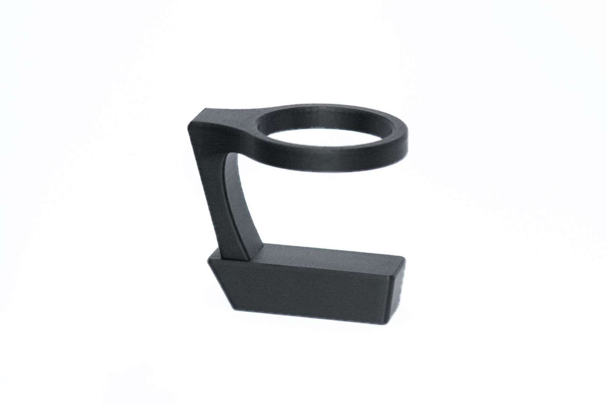
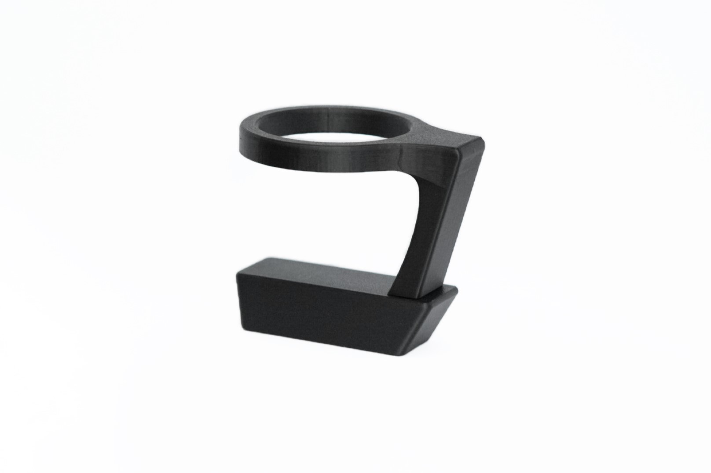
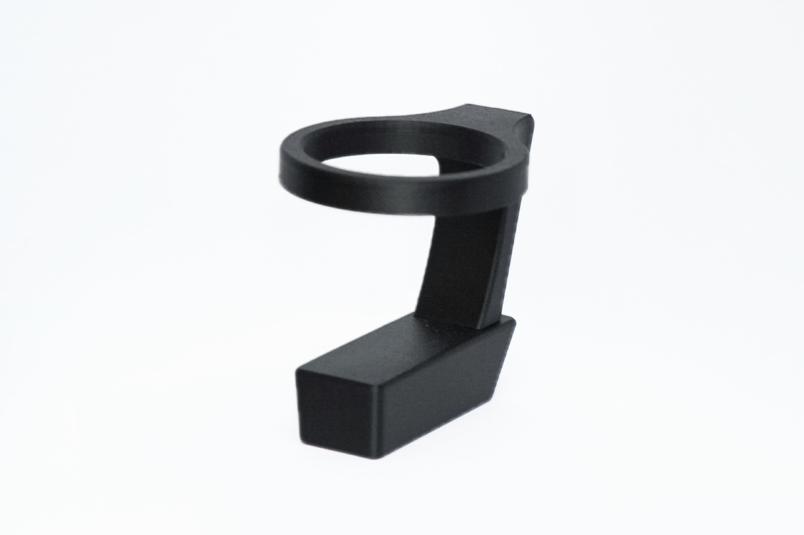
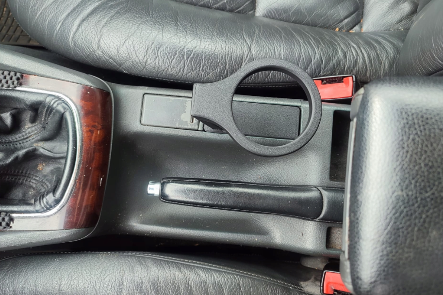

Cupholder Audi A4




Cupholder Audi A4 B5 FL
Cena: 59,99 zł
Opis produktu:
Uchwyt na napoje pasujący do Audi A4 B5 ( WERSJA Z PROSTYM TUNELEM, JAK NA ZDJĘCIACH ! ) . Montowany w tunelu środkowym. Cupholder wykonany jest za pomocą druku 3D, z materiału PET-G. Wierzchnie warstwy pokryte są lakierem. Otwór w uchwycie ma średnicę 74,5 mm. Uchwyt sprawdza się przy użyciu zarówno z większością kubków jednorazowych np. MC czy stacji benzynowych, dużych puszek z napojami (500ml) jak i z mniejszymi puszkami.
UWAGA!
Cupholder dopasowany jest do tunelów w Audi A4 B5 Lift tylko i wyłącznie w takiej wersji jak na zdjęciach. W przypadku próby montażu w innym tunelu uchwyt prawdopodobnie nie będzie pasował